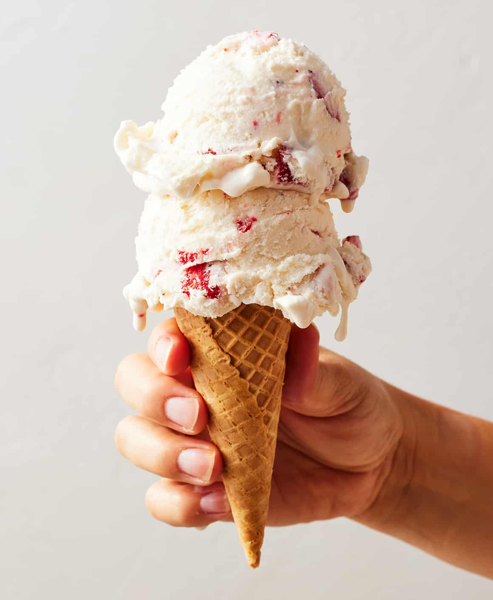
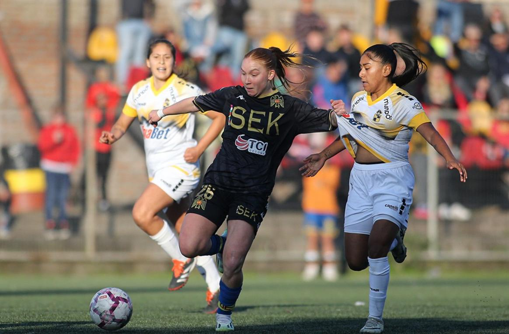

Welcome to My Personal Website!
My Hobbies
- Playing Football
- Traveling
- Reading
- Coding
My Top 3 Favorite Books
- It Starts With Us by Colleen Hoover
- The Ballad of Songbird and Snakes by Suzanne Collins
- Percy Jackson by Rick Riordan
My Favorite Movies
| Title | Year | Genre |
|---|---|---|
| Dirty Dancing | 1987 | Romance/Dance |
| Me Before You | 2016 | Romance/Dance |
My Favorite Foods
 |
 |
|  |
About Me
This is a picture of me playing football for my club team in Santiago, Chile. The club is called Union Espanola.

Useful Links

Open my Likedin link in a new tab
Fun Fact
Here's a smiley emoji: 😊